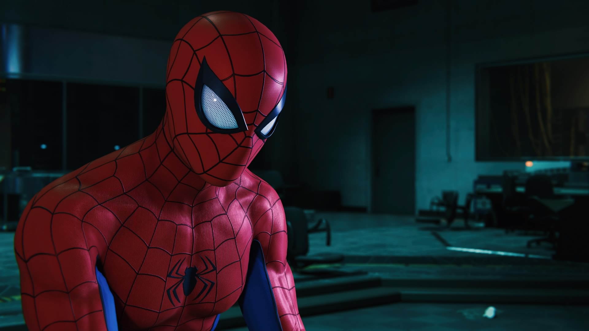
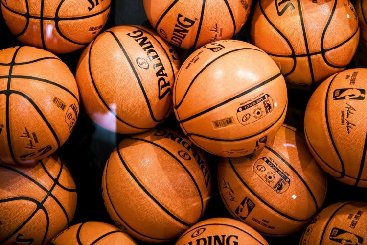

Me gusta casi todo tipo de música en general, pero principalmente
escucho rap. Técnicamente desde que soy pequeño escucho rap, y al
primero que escuché como tal fue a Eminem, incluso aunque no
entendiera
sus letras, e incluso a día de hoy sigo sin entenderlas del todo.
Desde
ahí, empecé a conocer rap en inglés, y ya hasta apenas hace unos
años,
comencé a conocer el rap en español, al cual no estaba acostumbrado
inicialmente.
Actualmente, dado a que me gusta el rap, empecé a indagar en el
mundo
del Freestyle, ya que no sabía ni que existía realmente. He de decir
que quedé fascinado ante todo lo que se ha forjado con el paso del
tiempo.

Videojuegos
Los videojuegos me gustan desde que soy pequeño. Y, aunque sea extraño
realmente, uno de los primeros juegos que recuerdo haber jugado es Mortal Kombat a pesar de que no era para mi
edad, ya que solamente tenía unos 5 años. A pesar de esto,
aunque mi hermano tenga actualmente esta edad, evito que juegue este
tipo de juegos. He de reconocer que, para su edad es bastante bueno en
los
videojuegos.
Después crecí y conocí muchos más juegos, convirtiéndose The Last
Of
Us en mi favorito. Esto por muchas razones, siendo el que me
transmitió mucho, por lo que lo guardo con cariño en mi corazón. Hace
más de un año que salió el segundo, y a pesar de las numerosas
críticas
que tuvo, a mí me gustó mucho. Para gustos, colores.

Basketball
Inicialmente no me gustaba el basketball... Hasta que lo jugué,
ya que nunca le daba la oportunidad por estar aferrado al fútbol. Y,
cuando lo jugué, me di cuenta de lo emocionante que es. La primera vez
que lo jugué fue cuando estaba en la secundaria, ya que nadie jugaba
fútbol técnicamente, así que ahí fue cuando me empezó a gustar. Lo
practiqué en la preparatoria también en las clases de educación física,
aunque casi nadie jugara, pero yo siempre estaba ahí.
Nunca lo he practicado profesionalmente, ni tampoco he entrenado, aunque
sí me gustaría, y mucho. Pero, he practicado por mi cuenta con lo que he
visto en videos o en personas que juegan mejor que yo. De hecho, hubo
una época, en donde después de años de no haber salido a jugar a la
unidad deportiva de por mi casa, salía a jugar con mis primos para echar
retas con desconocidos. Eran tardes muy emocionantes, pero eso habrá
sido hace más de dos años más o menos.
Cabe mencionar que a mi novia también le gusta mucho el basket, por lo
que siempre que hay oportunidad cuando nos vemos, aprovechamos para
salir a jugar y pasar un rato divertido y emocionante. Además, la
competitividad nunca falta.